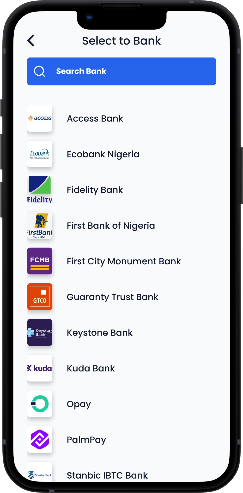
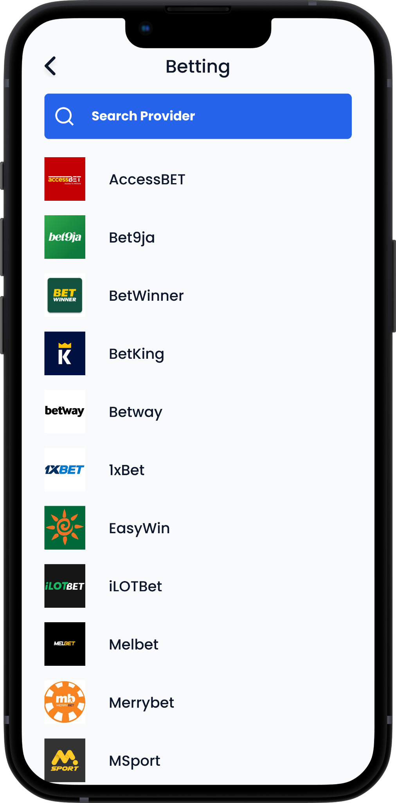
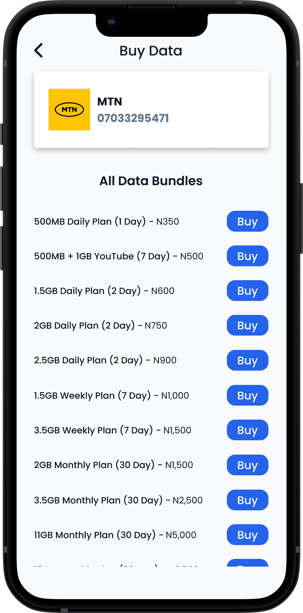
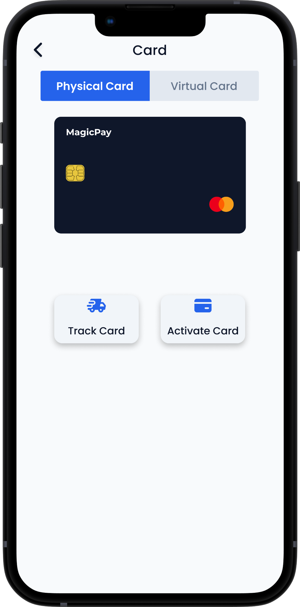
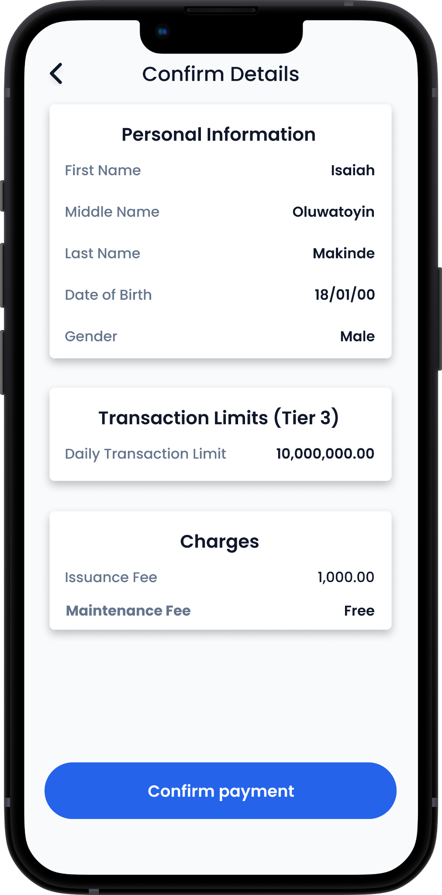
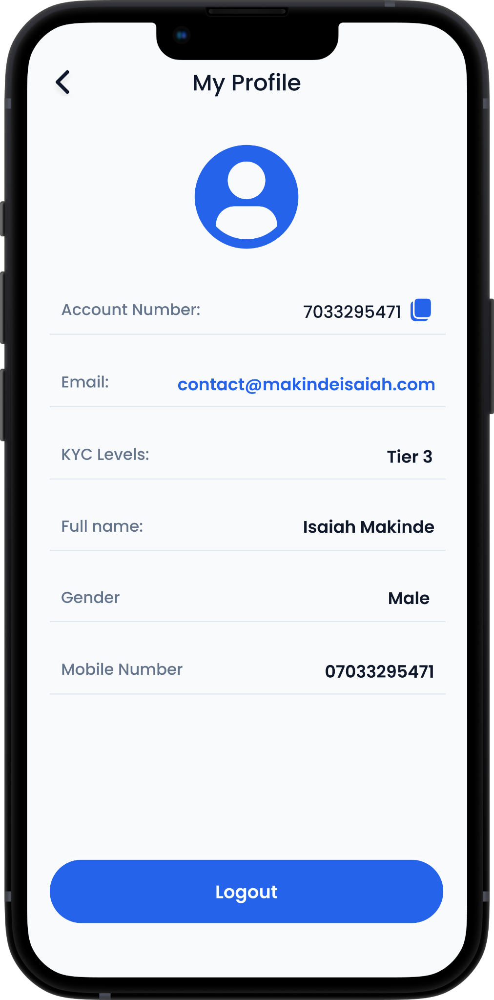
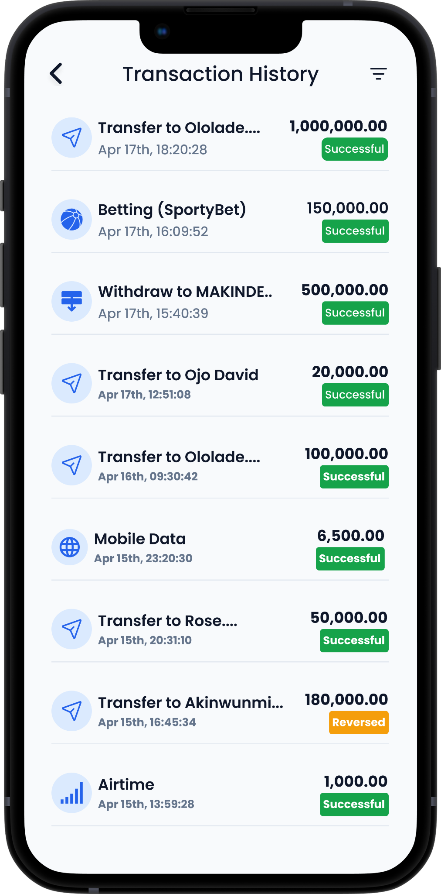
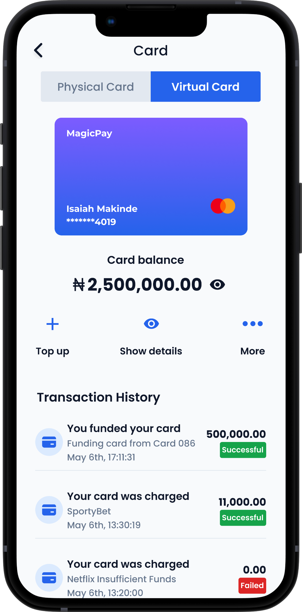
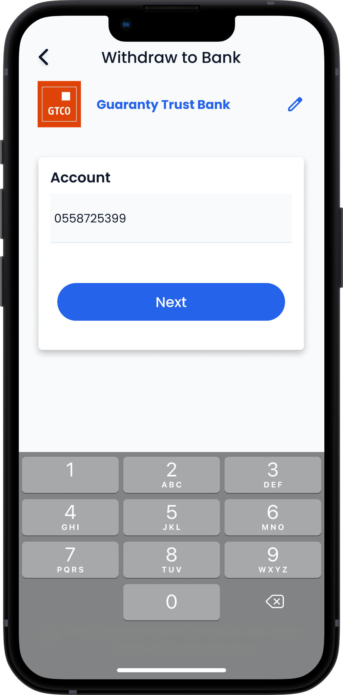

The welcome experience introduces the product and provides the entry point into the app.
CASE STUDY / FINTECH · MOBILE PRODUCT DESIGN
MagicPay.
A mobile financial services concept bringing everyday money movement, card tools and essential payments into one experience.
01 / PROJECT OVERVIEW
A product built around a complete user journey.
MagicPay is a fintech mobile app design project exploring how users could access a range of everyday financial services from one place. The supplied screens cover account access, cards, transaction activity, transfers, withdrawals and payments for services.
Primary audience: People who need to review account activity, manage payment cards, move money and pay for everyday digital services through a mobile interface.
02 / THE PROBLEM
The need behind the experience.
When financial activities are spread across different services, users may have to move between multiple interfaces to complete routine tasks. MagicPay explores a consolidated experience where common money and payment actions can be accessed from a single mobile product.
03 / PROJECT OBJECTIVES
What the experience is designed to achieve.
- Create a clear starting point for the user's financial activity.
- Make transfers and withdrawals easy to locate.
- Help users review transaction information before confirming an action.
- Bring card management and service payments into the same product experience.
- Use clear screen hierarchy to make multi-step financial tasks easier to follow.
04 / HOW IT WORKS
A walkthrough of the main user journey.
The profile and card areas provide access to account-related information and card tools.
Users move into a bank transfer or withdrawal flow depending on the task.
A confirmation-details screen gives users a point to review transaction information before proceeding.
The concept includes service-payment journeys such as buying mobile data and making a betting payment.
The transactions screen gives users a place to review their activity history.
05 / CORE FEATURES
Capabilities explained in context.
Account and profile
A profile area for account-related information and user settings.
Card management
Card and virtual-card screens explore how users can view and manage payment card features.
Transaction history
A dedicated activity view helps users review previous transactions.
Bank transfer
A transfer journey for moving funds through a bank selection and transfer interface.
Withdrawals
A withdrawal flow that guides the user through the action and its details.
Confirmation details
A review step designed to make transaction information visible before the user confirms.
Service payments
Additional screens explore payments such as mobile data and betting services.
06 / DESIGN APPROACH
Designing for clarity and continuity.
The design work focuses on making a broad set of financial actions feel like parts of one product. I organized the experience around recognizable task areas—account, cards, transactions and payments—and used dedicated screens to guide users through actions that require more attention, such as transfers and withdrawals. Confirmation details are treated as an important checkpoint.
07 / IMPLEMENTATION
From interface design to product build.
This portfolio entry documents the mobile product design and prototype work. The supplied screens should be understood as a design concept, not evidence of a deployed banking or payment service. The case study focuses on the interaction model, interface structure and visual design.
PROTOTYPE WALKTHROUGH
See the experience in motion.
This dedicated 16:9 space is reserved for the interactive prototype walkthrough. When your video is ready, replace this placeholder with an embedded video or prototype recording.
PROTOTYPE VIDEOVideo embed placeholder · Add video URL here
The screens, in context.
All 10 original supplied project images are included. Select any screen to view it at full size.










09 / CHALLENGES
The decisions behind the work.
The key design challenge is breadth: the product includes several types of financial tasks, each with its own information and decision points. The interface needs to make those actions discoverable while keeping each flow focused enough that users can understand what they are doing.
10 / KEY LEARNINGS
What I took away from the project.
The project gave me an opportunity to explore fintech interface patterns and the importance of clear information hierarchy around money-related actions. It reinforced the value of showing users relevant details at the point where they need to make a decision.
Mobile product design concept.